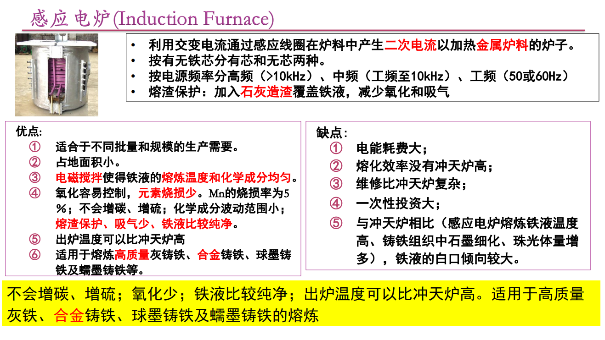
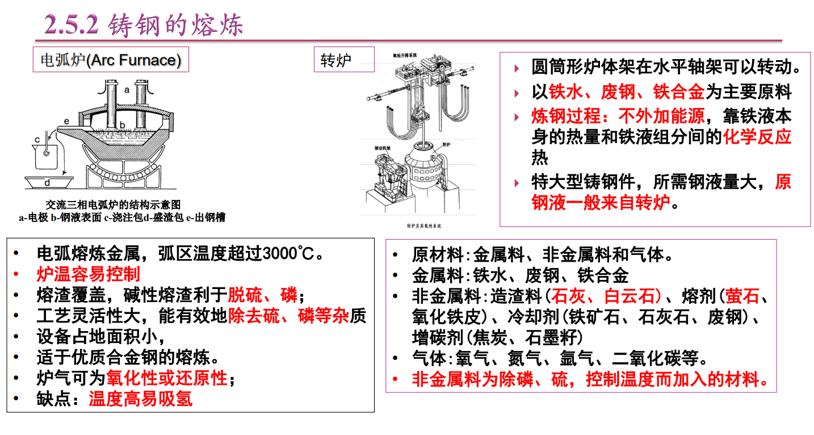
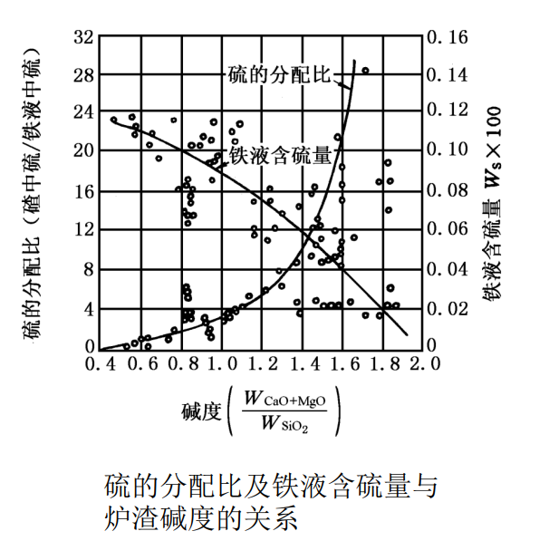
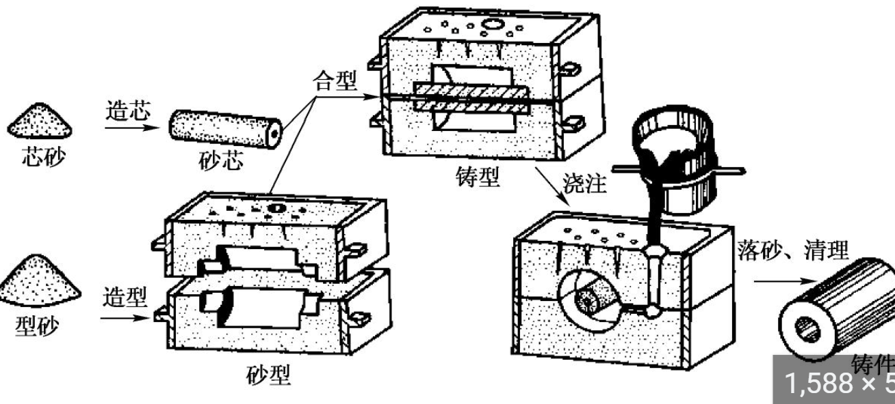
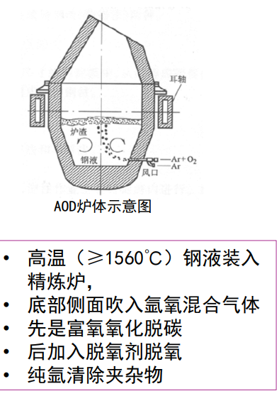
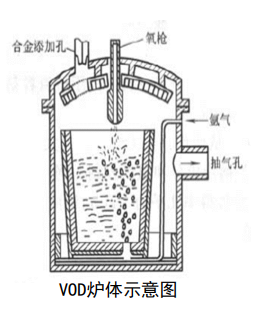
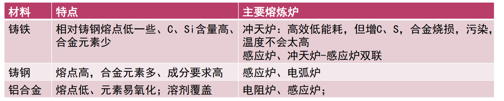
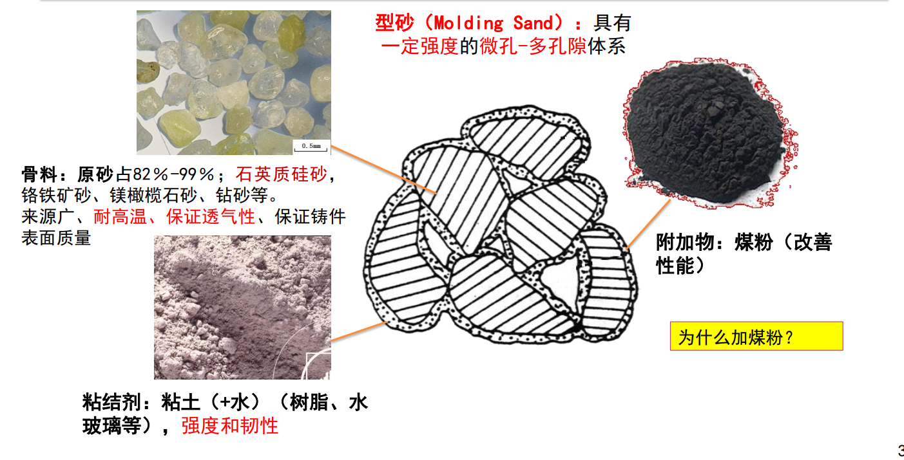
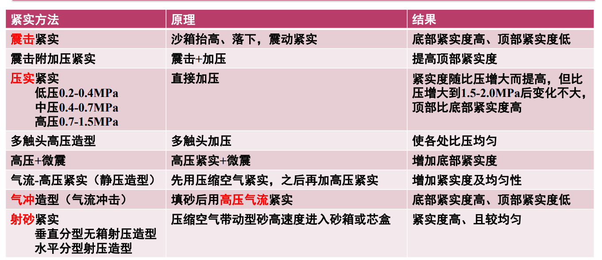

2.5 铸造熔炼与造型材料
2.5.1 铸铁的熔炼
浇注温度：1400
出炉温度：1450（原先+50）
薄件出路 再+20（冷却快）
冲天炉（Cupola）
底焦燃烧——预热、融化、过热——冶金（氧化还原、渗硫、脱硫、脱气、脱杂）
反应结果：Fe/Mn/Si——氧化
碳C的变化↑，增硫S↑（焦碳含大量硫）∵直接和焦底直接接触
补充：熔渣如CaCO3，CaF2（非金属，氧化物）
保护，隔绝空气（防止继续氧化），去除杂质
含碳量（负相关）
原先碳含量高 —— 降低；原先碳含量低 —— 碳含量升高

熔渣的酸碱

（酸性熔渣）硫的含量高，能去除更多碱性的杂志
铁液温度和成分波动大，∵焦底存在"烧损"（氧化了，或者直接融入铁液）
感应电炉 VS 冲天炉

感应电炉：不会增碳增硫，氧化少，出炉温度高，成分更容易控制（电磁搅拌）
2. 铸铁溶体处理
复习："孕育处理"only 铸铁
球化处理：（加入镁——稀土元素）让他表面粗糙，在"螺旋面"长，形成球化
2.5.2 铸钢的熔炼
（！不能用冲天炉，∵碳元素需要控制）
满足浇注要求
Si/Mn/C成分控制
电弧炉（Arc Furnace）

萤石=活石
氧化铁皮=氧化亚铁（Fe的氧化物）
精炼处理：降低（H\O\N\S\P）去
炉外精炼法：AOD法（氩氧脱碳精练）、VOD法（真空脱氧精练）、LF法（电弧炉精炼）
AOD炉

顺序：先除碳——再脱氧——其他气体（靠氩气）
氧化成CO2，脱氧剂脱氧，氩气吹走
VOD炉（真空）

在AOD基础上，抽真空，保护合金元素
环境：真空，金属液气体溶解度低（往空间跑）
LF（电弧）
2.5.3 铝合金的熔炼
铝合金：600
铝合金熔渣的要求：
温度合适（略低于 600）
惰性（不参与反应，氯化物KCl）
铝合金的炉子们

精炼处理：去除氢气（高温液体时H2溶解度大）
除H2：高压ZnCl2，C2Cl2 氯盐活氯化物
其他常见方法：输入氩气
气体：冶金反应析出，高温液体的时候溶解度高（固液溶解度差距1018）
熔化及冶金处理分类
按：原料成分、铸造温度——熔化方法、对杂质的敏感
2.6 砂型铸造
砂型 vs 型砂（Molding Sand）这两个的区别？？
2.6.1 型砂材料

*骨料：石英质硅砂
*粘结剂：粘土+水（韧性和强度）
*（若需）附加物：煤粉（脱氧还原）
2.6.2 砂型铸造造型
概念：
造型（molding）：填砂——紧实——期末——修整（气孔）
紧实度：型砂被紧实的程度（不连连续体的密度）
砂型铸造示意图

紧实方法总结
震：下面部分
压：上面紧实
其他：带着速度填砂等等